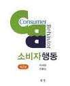

마케팅 관점에서의 광고 = 광고주를 위해 사람이 직접 개입하지 않고 대가를 지불하고 제품, 서비스, 아이디어를 촉진시키고 알리는 것을 목적으로 하는 형태
마케팅 활동 = 소비자의 욕구를 정확히 파악하여 이를 충족시켜 기업과 소비자의 교환과정을 창출하는 것
IMC(통합적관리)관점에서 광고 = 어느 한 가지 입장에 국한되기 보다 종합적인 관점에서의 큰 조망이 필요하다. 광고, PR, 인전판매 등 각 부문이 조화되어 상호유기적일때 시너지 효과를 창출한다.
광고의 분류 도달지역 범위에 따른 분류 국제광고 = 여러 국가에 표준화된 광고물을 집행하는 경우와 국가별 소비자 특성의 차이를 반영하여 광고. 국내광고 = 전국적인 네트워크를 통해 진행되는 전국광고와 특정지역에 국한하여 집행되는 지역광고.
IMC의 등장배경
1. 광고이외의 촉진활동의 중요성이 증가해 광고이외의 다른 커뮤니케이션 방법들을 효과적으로 사용할 수 있음을 인식함.
2. 세분화된 소비자층의 등장과 매체시장의 세분화현상으로 특정 소비자층에게만 메시지를 전달 할 수 있는 능력.
3. 뉴미디어가 등장하면서 커뮤니케이션의 개념이 바뀌었다. 브랜드지식 브랜드 인지도 = 한 제품에 속한 특정브랜드를 알아보거나 그 브랜드명을 쉽게 떠올릴 수 있는 능력을 말하며 브랜드재인과(특정브랜드를 단서로 제시했을 때 과거에 노출된 적이 있는지를 확인 할 수 있는 능력)
브랜드회상(특정제품범주 혹은 구매상황을 단서로 제시했을때 특정 브랜드를 기억해 내는 능력)으로 나뉜다.
브랜드 이미지 = 브랜드에대한 지각으로 정의되며 기억속에 저장되어있는 다양한 브랜드 관련 연상들의 결합으로 형성됨
소비자행동

마케팅컨셉 = 충족되지 않은 소비자욕구를 발견하여 이를 충족시켜야 하는것 소비자행동 = 소비자가 어떤시점에서 제품 서비스등과 같은 다양한 제품들의 소비와 관련하여 내리는 의사결정의 집합. 쥐덫의 오류 = 마이오피아 = 근시안적 마케팅 = 한 가지 제품에만 초점을 두어 미래를 내다보지 못하고 현상황만 생각하는것.
옴니채널 = 온라인과 오프프라인, 모바일 등 다양한 경로를 넘나들며 상품을 검색하고 구매할 수 있게 한 서비스로 각 유통채널의 특성을 결합해 어떤 태널에서든 같은 매장을 이용하는 것처럼 느낄 수 있도록 한 쇼핑환경. 상징적 소비자 행동 = 소비자들에게 제공되는 경쟁제품들 간에 기능적 효율가치에 대한 차이가 미미해지는 경향이 있어 경쟁적 차별화를 위해서는 기능적인 것보다는 상징적인 차별화가 설득력이 더 강해졌다.
상징적 소비 = 소비자의 마음속에 존재하는 제품의 무형적이고 의미론적이며 주관적인 측면과 관련된 행동으로 제품이 가지고 있는 상징적인 의미에 의해 평가되고 소비되는것.
쾌락적 관점의 소비 = 제품이 갖는 감정적특성과 제품이 주는 환상적 느낌에 초점을 둔다.
쾌락적소비의 특성 = 사치품과 필수품에 따라 다름. 쾌락적 속성과 실용적 속성의 비중이 다를 수 있다. 제품을 선택할때 제품의 속성에 따라 발생하는 감정상태가 동일하지 않다.
필요없는 제품의 구매이유 = 최대의 효용과 가치를 제공하는 제품보다는 선택 정당화나 합리화를 위한 이유를 가장 쉽게 생각 할 수 있는 제품을 선택
소비제품의 문화적 의미전달 = 광고, PR등 소비관련 커뮤니케이션 수당과 시스템에 문화적 가치를 내재하고 있는 상징적 의미를 연결시켜 제품에 문화적 가치와 상징적 의미를 전이시킬 수 있다. 사회계층 = 직업, 부, 지위 사회경제적 특성이 유사해 취미, 가치관 등을 공유하고 심리적인 경향이 일치하는 동일한 계층의 소비자들은 유사한 구매 행동으로 나타난다.
CRM(고객관계관리)
정의 = 고객이 원하는 제품과 서비스를 지속적으로 제공해 고객을 오래 유지시키고 평생가치를 극대화하여 수익성을 높일 수 있는 통합된활동 고객관계강화(현재고객 유량고객으로 치환) = 현재고객을 유향고객으로 전환시키기 위해 교차판매와 업셀링 등 다양한 활동을 전개해 구매를 향상시켜 고객과의 관계를 양적으로 확대할 수 있다. 고객관계획득 = 우량고객이 될 가능성이 있는 잠재고객의 확인과 잠재고객의 전환을통한 신규고객 창출과정이다. 기존 우량고객들의 특성을 미리 분석하는 것이 필요하다. 고객관계강화 = 현재고객을 우량고객으로 전환시키기위해 교차판매와 업셀링 등 다양한 활동을 전개한다. 고객관계유지 = 기존고객을 우호적으로 유지하는 것으로 고객이탈방지 캠페인을 펼치기도한다. 이탈가능성이 높게 평가된 핵심고객에게 별도의 이탈방지 활동을 전개하는것이 필요하다.
CRM실행이유 = 고객중김의 접근과 고객가치를 중심으로 고객의 역량을 키우는데 집중하여 기존고객과의 관계구축 정도가 기업의 신뢰와 성과에 영향을 준다.
CRM필요배경 = 고객파워의 증가로 시대적인 요구, 경쟁심화, 고객점유율이 중요한 시장 CRM 도입목적 = 고객의 충성도 강화, 맞춤서비스제공, 우량고객을 파악 후 평생고객화로 고객서비스의 신속성과 기업의 비용절감.